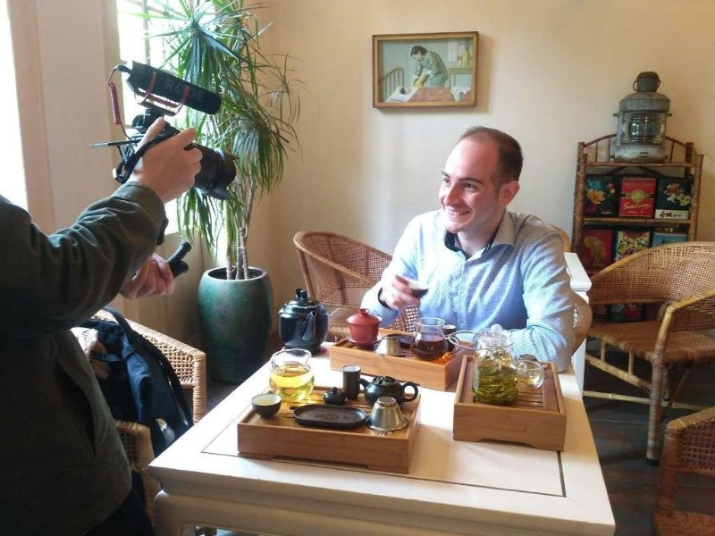
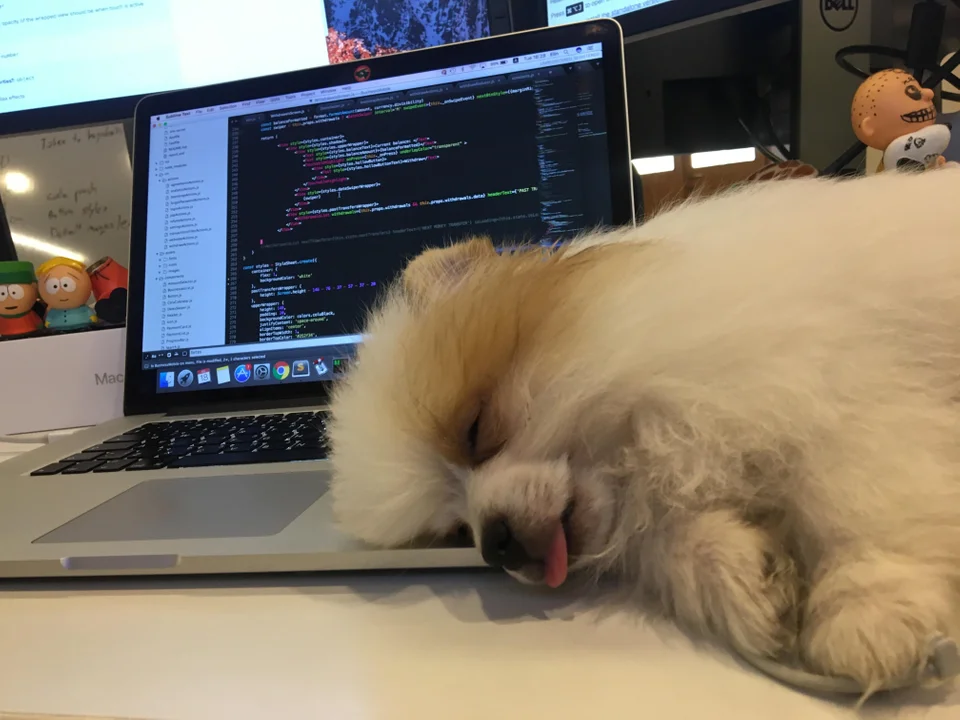

- About Me
- What I can Offer?
- Company Service
- Business Cases
- Accomplishments
- How to Find Me?
- My Linkedin
BEA BLOME | PROFILE
2013-2015: Media Manager
Dingzun is a media partner of Financial Times, Wall Street Journey,
Bloomberg, and China Daily. Responsible for analyzing data and KPI to
clients, elaborating online advertising integration plans through social
media/ SEO/ DSP and PR release. Managed to help international clients
increase sales in China by adopting online advertising strategies and
data analysis.
Establishment of an online tea brand promoting Chinese whole-leaf tea and Chinese tea culture. Responsible for developing digital marketing strategies, website design, executing online media data analysis, financial budget forecasting & planning, establishing cross-brand promotions, organizing offline tea education events. Planning and managing online video series related to Chinese tea culture on Chinese social media, and the production of advertising videos for clients such as Teabuddy, InWe Cha. Managed to reach 300K followers on Chinese social media. Rewarded and named the 3rd most Popular Influencer Media in China by Pear Video in 2017.  2017~2018: Blome Design
Establishment of an online-based brand promoting smart design travel accessories. Responsible for developing digital marketing strategies, website design, executing E-commerce online data analysis and collection, KPI analysis, financial budget forecasting and planning, online platform operations, daily sales operation and monitoring, and supply chain communication.

2018~2020: Web Developer
Student Web Developer at DCI Digital Career Institute GmbH

Experience
Student Web Developer at DCI Digital Career Institute GmbH
Co-Founder at WasaTea
Education
Finance & Business at Sheffield Hallam University
Skills
Digital market, Online-marketing, Web development, Data Science
Accomplishments
Rewarded and named the 3rd most Popular Influencer Media in China by Pear Video in 2017
Interests
Business Building, Tea Culture, Chinese Culture